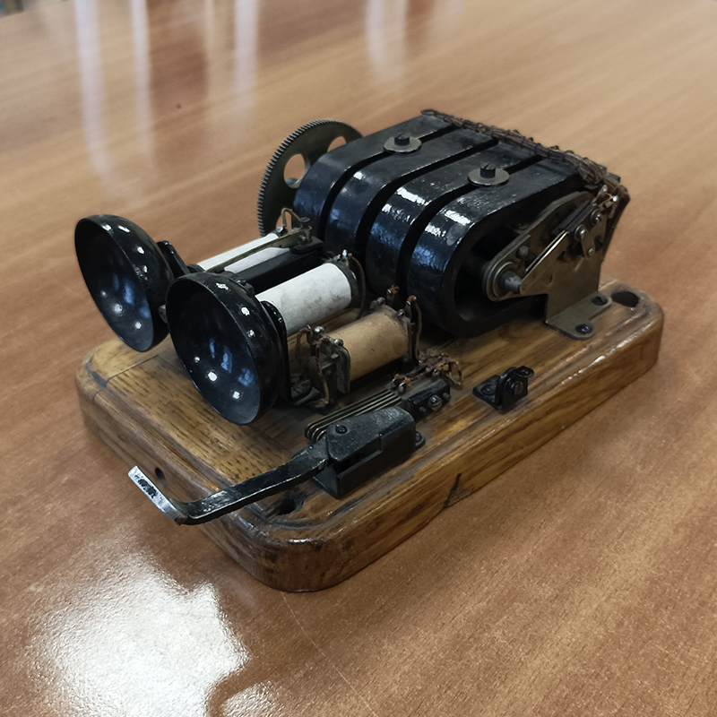
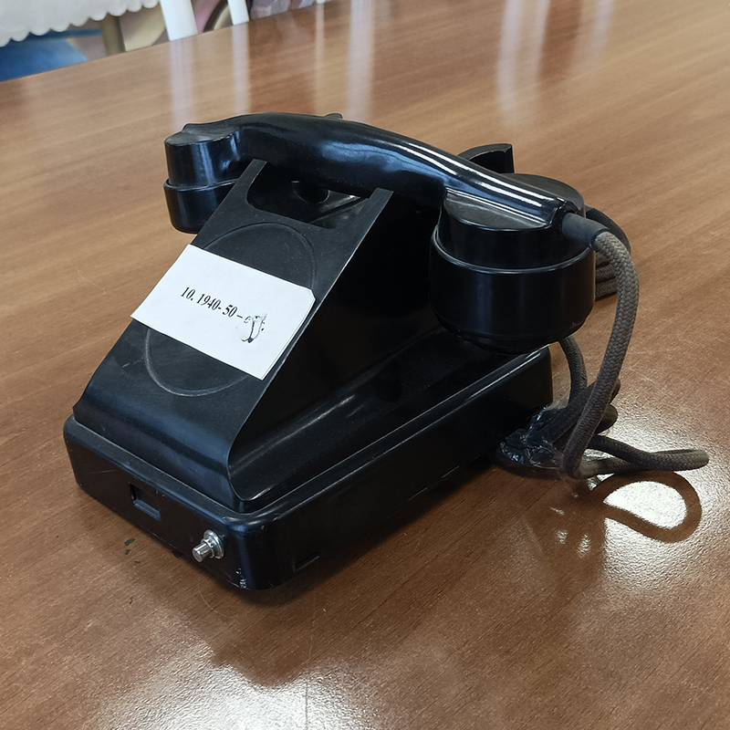
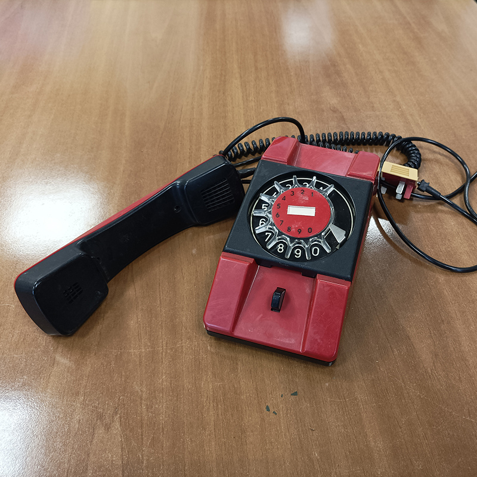
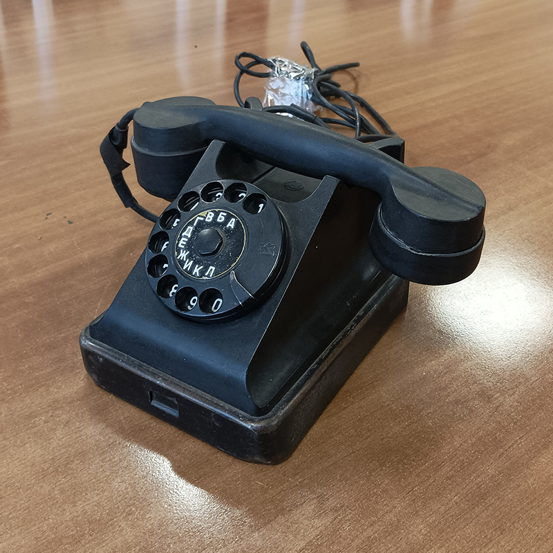
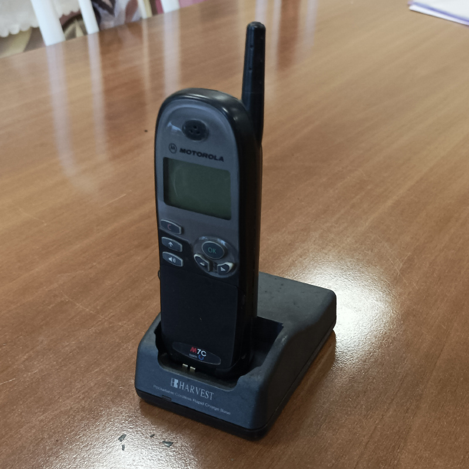

Арифмометр "Феликс"
Самый распространённый в СССР арифмометр. Назван в честь Феликса Дзержинского. Выпускался с 1929 по 1978 годы общим тиражом несколько миллионов машин. Всего было создано более двух десятков модификаций арифмометра.Эта счётная машина является модификацией рычажного арифмометра Однера. Она позволяет работать с операндами длиной до 9 знаков и получать ответ длиной до 13 знаков
Телефонный аппарат "VEF"
Выпускались разные модели телефонных аппаратов: от классических с дисковым номеронабирателем и механическим звонком, до современных кнопочных телефонов с памятью на несколько номеров и другими сервисными функциями. Завод выпускал как телефоны для обычных сетей, так и для учрежденческих сетей.


Телефонный аппарат "BRATEK"
Компактный настенный телефонный аппарат в красном пластиковом корпусе с черной отделкой. Микротелефонная трубка подвешивается над диском-номеронабирателем. Особенность модели: прозрачный диск необычной формы имеет не отверстия, а выемки над цифрами циферблата. Эксплуатационные возможности: Включение по схеме «Директор—секретарь», двухпроводное включение и спаренное включение посредством приставок диодного разделения цепей, «безобрывное» отключение аппарата от абонентской линии и подключение его к дополнительной розетке .
Телефонный аппарат «BAGTA-50»
Настольный телефонный аппарат, выпускался в Советском Союзе на Рижском государственном электротехническом заводе «ВЭФ». Это был самый массовый послевоенный аппарат. На нём работали лучшие специалисты со всей страны. Настольный аппарат VEF "Багта-50-АТС" состоит из телефонной трубки и корпуса, внутри которого размещены вызывные приборы, коммутационное устройство, дополнительные элементы и узлы, связанные с работой аппарата и его схемой.


Радиотелефон "Harvest HT-7"
Радиотелефон Harvest НТ-7 имеет большой радиус действия и маленький размер трубки, чем привлекает широкие массы потребителя. Он может обеспечить диапазон действия от 500 м. до 10 км. Удивительное отличие - чтобы увеличить диапазон действия от 10 км. до 40 км., необходимо лишь установить наружную антенну и усилитель. Одна база HT-7 может обслуживать максимум до 8 телефонных трубок, и телефонная трубка может работать на двух базах.